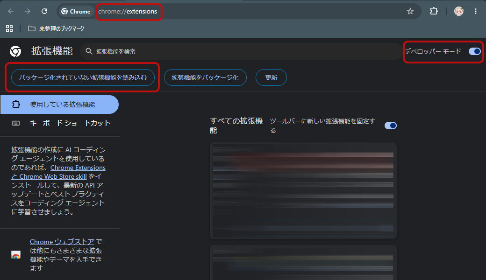
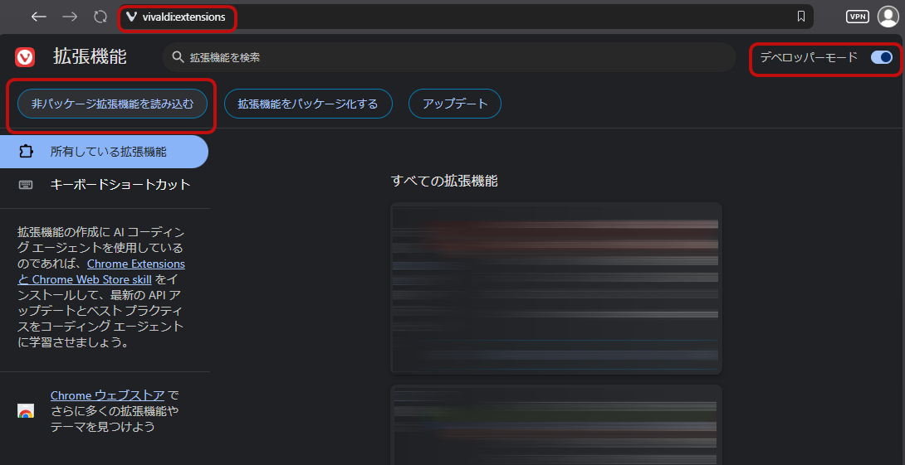
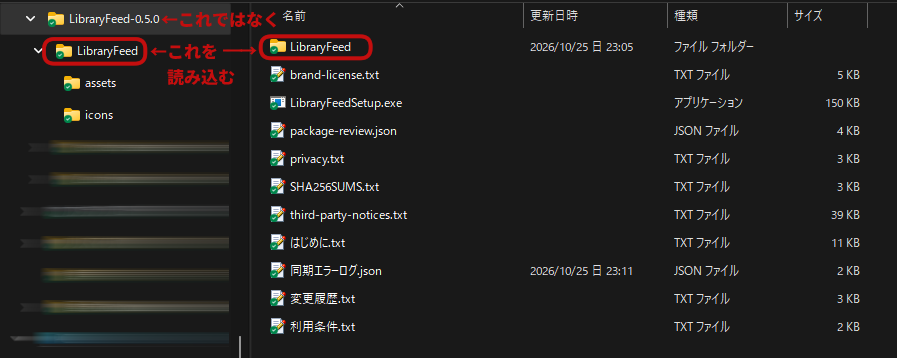
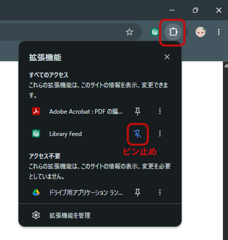
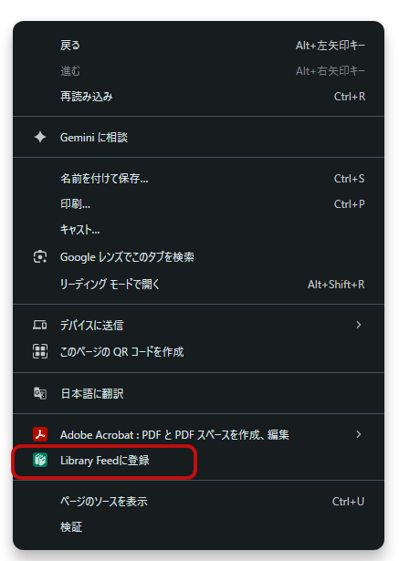
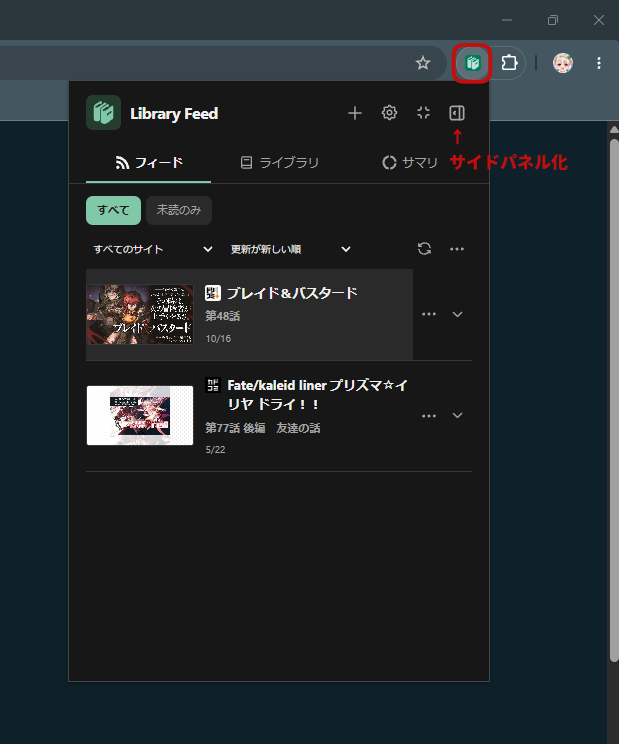

はじめかた
ZIPをダウンロードして解凍
ページ上のボタンからZIPをダウンロードし、解凍します。
配布一覧が開いた場合は「LibraryFeed-…zip」を選びます。
拡張機能の画面から読み込む
次のアドレスをブラウザのアドレスバーに貼り付けて開きます。
chrome://extensions「デベロッパーモード」をONにし、「パッケージ化されていない拡張機能を読み込む」をクリック。

Chrome：赤枠の箇所を操作します。クリックで拡大。 vivaldi://extensions「デベロッパーモード」をONにし、「非パッケージ拡張機能を読み込む」をクリック。

Vivaldi：赤枠の箇所を操作します。クリックで拡大。 中の「LibraryFeed」フォルダーを選ぶ
選ぶのは、「LibraryFeed-…」ではなく、その中の
「LibraryFeed」フォルダーです。
外側の「LibraryFeed-…」ではなく、中の赤枠のフォルダーを選びます。クリックで拡大。 読み込み後、ブラウザ右上の拡張機能から「Library Feed」を開けば完了です。
読み込んだフォルダーは、使っている間は移動・削除しないでください。


Google同期は任意です
Chromeでは同梱Setupは不要です。「設定 → データ → 同期」から接続できます。
Edge／Vivaldiで同期する場合だけ、同梱の LibraryFeedSetup.exe を実行し、「設定 → データ → 同期」で「Windows補助プログラム」を使います。
補足・アップデートについて
SetupやGoogle画面に警告・エラーが出た場合は、無理に進めず配布元へご連絡ください。会社・学校の管理で導入が禁止されている場合は導入を止めてください。
更新前にJSONバックアップを保存し、拡張を一時OFFにして、同じフォルダーの製品ファイルを新版へ置き換えて再読み込みします。拡張の「削除」は使いません。
詳しい手順・同期方法は、ZIP同梱の「はじめに.txt」をご覧ください。
使い方
画像はChromeの例です。
アイコンをピン留め
ブラウザ右上の拡張機能メニューを開き、「Library Feed」のピンをクリックします。

赤枠のピンで、アイコンを固定します。クリックで拡大。 好きな漫画を右クリックで登録
対応サイトの作品ページを開き、右クリック → 「Library Feedに登録」を選びます。

気になる作品のページで登録。クリックで拡大。 アイコンから更新をチェック
固定したLibrary Feedのアイコンをクリックすると、登録作品の更新が開きます。
画像の右上のボタンから、サイドパネルでも使えます。

登録した漫画の更新をまとめて確認。クリックで拡大。


漫画が更新されると、アイコンに未読数が表示されます。
できること
- 登録サイトの更新チェック・新着通知
- 記事ごとの既読・未読管理
- 任意のGoogle同期・JSONバックアップ
取得範囲は配信元によって異なります。漫画本文や有料コンテンツを配信するサービスではありません。
データとプライバシー
登録した作品・更新履歴・既読状態等はブラウザ内に保存されます。Google Driveへの同期は任意で、利用者自身のGoogleアカウントのアプリ専用領域を使用します。
データの取得・利用・保存などの詳細は、プライバシーポリシーをご確認ください。
お問い合わせ
Library Feedについての連絡先：hiroyamahiroshi00@gmail.com